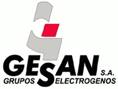
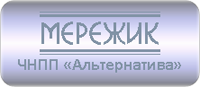

Компании -Производители бензиновых, дизельных и газовых генераторов

На
сегодняшний день в Украине представлено очень большое количество
электростанций известных мировых производителей. Каждый из них применяет
свои технологии, поэтому определиться, кто лучше или хуже достаточно
тяжело. Активно пользуются большой спросом электростанции (генераторы)
с переменным током известных европейских торговых марок т.к. при их
применении возникает намного меньше проблем, а срок эксплуатации – выше.
Сборка электростанций происходит с использованием новейших мировых
технологий и соответствует современным стандартам безопасности и
качества. Официальная гарантия и цены от производителя.
GENERAC (США) – GENERAC POWER SYSTEMS является
одним из наиболее известных компаний в этой области, а ее продукция
предназначена для решения широкого круга задач. Надежные, эффективные и
экономичные источники питания - газовые генераторы Generac,
работающие даже при низком давлении от природного и жидкого газа
мощностью от 0.8 кВт до 9000 кВт с инновационной системой управления
генератором PowerManager и АВР. В бензиновых и газовых электростанциях Generac
двигателя используются только своего производства. Электрогенераторы с
высоким качеством по доступной цене. Гарантия - 5 лет! Лидер продаж на
рынке Украины и не только.
GENMAC (Италия) – производитель дизельных и бензиновых электрических станций мощностью от 2500ВА до 1023кВА., а также генераторов, работающих на газообразном топливе мощностью от 8,8ВА до 117кВА с очень широким спектром применения. В электростанциях Genmac используются высоконадежные, современные и экономичные двигатели мировых производителей: бензиновые электростанции оснащаются двигателями Subaru и Kohler (США), дизельные - Lombardini (Италия), газовые - Kohler и General Motors (США); генераторами - Mecc Alte, Sincro. Итальянские электростанции GENMAC, лёгкие и элегантные, в характерном итальянском дизайне, представляют собой полезный надёжный прочный и очень конкурентоспособный на рынке прибор. Газовый генератор убережет Ваш дом или дело от любых незапланированных затрат и неудобств, связанных с перебоями в энергоснабжении. Цена соответствует качеству. Гарантия 1 год.
GEKO (Германия) – в электростанциях Geko, работающих даже в самых суровых условиях, военной технике, используются современные, высоконадежные и экономичные двигатели лучших всемирно известных производителей: Honda (Япония), Suzuki (, Hatz (Германия), Mitsubishi (Корея), Briggs & Stratton (США). Большие электростанции Geko комплектуются двигателями Deutz (Германия). Соответственно и цена на них завышена. Модельный ряд представлен сериями: Эко Тихие, Профессиональные, Особо тихие, Прочные, Специальные. Гарантия 1 год.
HONDA-ELEMAX (Япония) – в бензиновых генераторах используют надежные двигателя Honda (Япония), в дизельных генераторах двигатели Kubota (Япония). На данный момент поставка оборудования в Украине приостановлена. Гарантия 1 год.

EUROPOWER (Бельгия) – EUROPOWER Generators один из ведущих производителей высококлассных электростанций малой и средней мощности. Выпускаются бензиновые электростанции EUROPOWER с двигателями от производителей Honda (1 - 15кВА), Vanguard (3 - 20кВА) а так же дизельные на двигателях Yanmar (3 - 6кВА), Hatz (3 - 30кВА), KUBOTA (8 - 40 кВА). Гарантия 1 год.
FULLPOWER (Польша) – Full Power Generators на рынке Украины появились недавно, успели зарекомендовать себя как надежные источники электропитания по бюджетной цене. В своем производстве применяют бензиновые и дизельные двигатели MBH и Ricardo (Англия). Диапазон мощностей портативных бензиновых установок Full Power от 1,1кВт до 4,5кВт и дизельных электростанций Full Power от 14кВт до 220кВт. Гарантия 2 года.
HIMOINSA (Испания) - лидирующая компания в производстве энергии. Промышленная серия электростанций Himoinsa предназначена для обеспечения максимальной производительности и доступности обслуживания, как в профессиональном, так и частном использовании. Оборудование имеет высокую рентабельность в обеспечении надежностью и эффективностью. Гарантия 1 год. Модельный ряд:
- Серия HYW_YANMAR с двигателями Yanmar (Япония) мощностью 5-41кВА;
- Серия HFW_FPT_IVECO с двигателями Iveco (Италия) мощностью 28-400кВА;
- Серия HDW_DOOSAN с двигателями Doosan Daewoo (Юж.Корея) мощностью 118-657кВА;
- Серия HSW_SCANIA с двигателями Scania (Швеция) мощностью 250-550кВА;
- Серия HVW_VOLVO с двигателями Volvo (Швеция) мощностью 250-637кВА;
- Серия HZA_HATZ с двигателями Hatz (Германия) мощностью 4-33кВА;
- Серия HLA_LOMBARDINI с двигателями Lombardini (Италия) мощностью 8-21кВА;
- Серия HMW_MTU с двигателями MTU (Германия) мощностью 278-663кВА.
MATARI (Япония) – Основной продукцией компании "Matari Motors Corp." являются дизельные и бензиновые электростанции японского качества малой и большой мощности, так же компания производит бензиновые и дизельные мотопомпы, мини экскаваторы, компрессоры подачи воздуха. Выпускаемые дизельные электростанции поставляются как в обычном, так и в шумозащитном корпусе. Номинальная мощность электростанций MATARI в пределах от 1 до 3000 кВт. С использованием инновационных технологий, генераторы MATARI, наиболее экономичные по потреблению топлива в своем классе. Одним из преимуществ модельного ряда электростанций MATARI является наличие систем автоматического запуска (АВР) при аварийных отключениях электрического тока. Гарантия 2 года.
KOHLER (США) - газопоршневые электростанции Kohler Power Systems высокого качества и надежности, работающие на природном газе. Ассортимент газовых электростанций Kohler очень широк: бензиновые, дизельные, газовые двигатели и генераторы (от судовых мощностью 5кВт и до индустриальных мощностью 2800кВт), распределительные устройства, системы контроля для первичного и резервного потребления энергии и др. Газогенераторы выпускаются в двух сериях: Residential (бытовые) и Industrial (промышленные). Гарантия 1 год.
DALGAKIRAN или GENPOWER (Турция) – генераторы Dalgakiran успешно применяется как автономный или резервный источник электропитания. Модельный ряд включает генераторы от 2,5 кВА до 2264 кВА. В наличии как небольшие дизельные генераторы, используемые для работы в режиме резервного энергообеспечения, так и крупные дизельные электростанции, поставляющие электроэнергию для промышленных объектов и национальных электрических сетей. Гарантия 1 год.
- Дизельные электростанции на базе двигателя VOLVO PENTA (Швеция) мощностью от 94 до 700 кВА;
- Дизельные электростанции на базе двигателя PERKINS (Великобритания) мощностью от 10 до 2264 кВА;
- Дизельные электростанции на базе двигателя DOOSAN-DAEWOO (Корея) мощностью от 345 до 775 кВА;
- Бензиновые генераторы на базе двигателей BRIGGS & STRATTON (США) мощностью от 2,4 до 15 кВА;
- Дизельные электростанции на базе двигателей INTER (International) - производятся по лицензии Cummins (США) мощность от 13 до 275 кВА (на данный момент производство прекращено).
А также на базе двигателей MTU (Германия), Motorsazan (Иран) и другие.
Дизельные генераторы Dalgakiran
данных серий укомплектованы четырехтактными промышленными дизельными
двигателями и синхронными генераторами: LEROY SOMER; STAMFORD; MARATHON с
системой автоматического поддержания частоты и напряжения, независимо
от нагрузки. Бюджетный вариант для стабильного электроснабжения.
AKSA (Турция) - AKSA Power Generation - всемирно известный производитель энергетического оборудования, производства энергоагрегатов с дизельными, бензиновыми и газовыми двигателями как Cummins (55 - 400кВА, 500 - 2500кВА), Doosan (225 - 700кВА, 157 - 428кВА газ), John Deere (33 - 275кВт), Aksa (0,9 - 8,8кВт бензин и 11,5 - 150кВА, 200 - 2250кВА дизель), Mitsubishi (11 - 33кВт), Lister Petter (15-30кВт), Perkins, Briggs&Stratton (8 - 17кВА), GM (25 - 82кВА газ). Диапазон мощности генераторов AKSA составляет от 2,2кВт до 2500кВт. Агрегаты оснащены панелями управления DSE 720, DSE 6020, DSE 7320 а так же автоматическими переключателями режимов работы "Сеть/Резерв" - АВР. Применение довольно таки широкое. Гарантия 1 год.
POWER ONE или GUCBIR (Турция) – одна из лидирующих среди фирм – поставщиков и производителей бензиновых и дизельных генераторов в Турции. Работая по принципам честности и надежности, производитель предлагает потребителям первосортное качество по самым выгодным ценам. Дизельные электростанции Power One поставляются в Украину с двигателями Ricardo (Англия) мощностью 40 - 306кВА. Гарантия 1 год.
GLENDALE (Тайвань) - один из профессиональных поставщиков в Тайване бензиновых и дизельных электростанций, который применяет японские технологии и имеет богатый опыт в области энергетики и оборудования для сельского хозяйства. Вся продукция соответствует высоким стандартам производительности и надежности, таким как CE, EPA, RoHS, Euro2 и т.д. Гарантия 2 года.
Компании-Производители стабилизаторов (нормализаторов) сетевого напряжения, фирмы стабилизаторов
Существуют стабилизаторы напряжения следующих типов: ступенчатые (релейные и симисторные (тиристорные)), электромеханические ((сервоприводные) - только производства Китай!) и феррорезонансные. В сравнении с немалым количеством высококачественных но довольно таки дорогих зарубежных образцов, стабилизаторы украинского производителя отличаются низкой стоимостью и при этом ни на сколько не уступая в надежности и длительности срока эксплуатации. Каждый стабилизатор украинского производства проходит жесткий контроль качества от начала сборки до полной готовности к отгрузке и соответствует санитарным нормам и условиям пожарной безопасности. Время реакции на изменение входного напряжения у всех стабилизаторов – 20 мс. Официальная гарантия и цены от производителя.
CONSTANTA (Украина) - тиристорные (симисторные) стабилизаторы напряжения CONSTANTA производства фирмы "Электростиль" обладают рядом преимуществ, обеспечивают поддержание стабильного напряжения на выходе с допустимой максимальной погрешностью ±3-4%, а также частичную фильтрацию сетевого питающего напряжения от высокочастотных и импульсных помех. Выпускаются в однофазном исполнении, мощностью 7, 9, 11 и 14 кВА. Серия стабилизаторов напряжения «CONSTANTA» воплощает в себе весь опыт и наработки специалистов в области эксплуатации и наладки преобразовательной техники. Это выгодно отличает их в лидерах на широком рынке подобных изделий. Мы не экономим на добротности изделий, мы откровенны и честны перед нашими покупателями. Constanta – это набирающий обороты производитель. Хорошо рекомендует себя на рынке. Выпускается посерийно: Lite, Medium и Prime, рассчитанные на разные виды эксплуатации для дома и малых предприятий. Гарантия - 36 месяцев.
ЭЛЕКС-Герц (Украина) - стабилизаторы ЭЛЕКС (Герц) представляют собой автотрансформатор с 16 (36) ступенями регулирования на силовых ключах (симисторах) с микропроцессорным управлением. Диапазон входного напряжения, при котором обеспечивается выходное напряжение 230/380±2,5% (230/380±1%) Вольт – 260-450 Вольт. Стабилизаторы Герц оснащены защитой от повышенного и пониженного напряжения на входе, защитой от повышения и понижения частоты сети, защитой от перегрева трансформатора и силовых ключей (симисторов), защитой от перегрузки и защитой от короткого замыкания. Предусмотрен режим «Транзит» («Bypass»), при котором напряжение со входа стабилизатора непосредственно подаётся на выход, при этом стабилизатор отключён. Основные характеристики: тороидальный трансформатор, силовые ключи – симисторы, индикация входного и выходного напряжения, навесное крепление. Гарантия - 24 месяца.

НОНС / ННСТ (Украина) - стабилизаторы напряжения НОНС (однофазные) и ННСТ (трехфазные)
безопасны в работе, безопасны для окружающей среды и человека, как в
офисе, так и в бытовой обстановке. Нормализаторы выполнены из негорючих и
не поддерживающих горение материалов. Качество стабилизаторов
подтверждено сертификатом соответствия системы УкрСЕПРО УХЛ 4.2 ТУ У
13481596.001-95. На производстве внедрена система менеджмента качества
ISO 9001:2000. Точность поддержания выходного стабилизированного
напряжения 220±1-6%В, в зависимости от модели. Модельный ряд: «Normic»,
«Shteel», «Calmer», «Flagman». Гарантия - 24 месяца.
VOLTER СНПТО / СНПТТ (Украина) - Основными отличиями стабилизаторов напряжения VOLTER
- являются стабильное качество, надежность, долговечность,
безопасность, неприхотливость и максимальная приспособленность к нашим
электрическим сетям. Это подтверждают сертификаты соответствия УкрСЕПРО,
Госстандарта России и сертификат ISO 9001 «Системы управления
качеством», а также протоколы испытаний. Стабилизаторы Volter
рассчитаны на непрерывный круглосуточный режим работы в закрытых
помещениях и устанавливается стационарно на весь дом (квартиру, офис,
производственное оборудование). Подключается с помощью клеммника, в
разрыв фазы на вводе, сразу после счетчика. Схема стабилизатора Volter
состоит из автотрансформатора, мощных силовых ключей (тиристоров) и
контроллера напряжения. Гарантия - 5 лет.
НСН (Украина) - стабилизаторы напряжения HCH
(Укртехнология) обладают рядом преимуществ, обеспечивают поддержание
стабильного напряжения на выходе с допустимой максимальной погрешностью
±3%~7%, а также частичную фильтрацию сетевого питающего напряжения от
высокочастотных и импульсных помех. Выпускаются в однофазном исполнении,
мощностью от 5 кВА до 35 кВА. Каждый стабилизатор проходит жесткий
контроль качества от начала сборки до полной готовности к отгрузке и
соответствует санитарным нормам и условиям пожарной безопасности.
Модельный ряд: «Norma», «Optimum», «Standard», «Infinity». Гарантия - 36
месяцев.
СНОПТ (Украина) - стабилизаторы напряжения однофазные повышенной точности серии СНОПТ
- это полностью самостоятельные, быстродействующие микропроцессорные
устройства не требующие ухода и обслуживания. Стабилизатор напряжения
предназначен для непрерывного обеспечения стабилизированным напряжением
всех видов электропотребителей при питании от сети переменного тока
136-278В частотой 50Hz с максимально допустимой погрешностью 2,5%.
Обеспечивает защиту электропотребителей от аварийно низкого и высокого
напряжения, от сверхтоков, перегрузок по току, от утечки токов в землю
(УЗО) в бытовых, коммерческих, производственных помещениях. Гарантия -
36 месяцев.
Компании-Производители источников бесперебойного питания, фирмы ИБП (UPS)
Для решения проблем нестабильности электропитания бытовой техники – применяются сетевые фильтры и Источники Бесперебойного Питания (ИБП - UPS). Корпоративный рынок источников бесперебойного питания (ИБП) в Украине характеризуется явно выраженной консервативностью и отсутствием спешки при выборе и покупке оборудования. Во-первых, куда торопиться, если денег все равно нет, либо они появятся, но позже. При выборе ИБП в любом случае необходимо присмотреться к предложению производителей, сделать правильный выбор ведь ИБП должны работать долго, надежно и не создавать ненужных проблем. Производители Eaton и Riello UPS прежде всего акцентируют свои усилия на решениях для корпоративных потребителей. Luxeon входит в сегмент ИБП начального уровня.
EATON (Финляндия) - ИБП Eaton Powerware производятся единичной мощностью от 500 ВА до 550 кВА, которые обеспечат надежную защиту оборудования для всех областей бизнеса, телекоммуникаций и промышленного производства. ИБП Eaton Powerware являются идеальным средством защиты оборудования, для которого последствия сбоев электропитания могут стать катастрофическими. В настоящее время, продукция, выпускаемая под торговой маркой ИБП Eaton Powerware включает в себя полную линейку ИБП постоянного и переменного тока, программное обеспечение для управления электропитанием, средства удаленного мониторинга, услуги системной интеграции «под ключ» и техническую поддержку на месте. Предоставляется гарантия 24 месяца.
RIELLO (Италия) - Модельный ряд производимых ИБП Riello Industries находится в диапазоне мощностей от 400 ВА до 6400 кВА. Более чем 100 тысяч устройств ежегодно производится компанией на своих заводах в Леньяго, Милане и Турине. Компания целеустремленно смотрит в будущее и уже через несколько лет планирует занять лидирующие позиции на мировом рынке. Компания имеет три научно-исследовательских центра и придает огромное значение процессу разработки и совершенствованию новых современных моделей ИБП во всех диапазонах мощностей. Гарантия 24 месяца.
MAKELSAN (Турция) - МАКЕЛСАН это один из лидирующих производителей ИБП в Турции. Продукция Макелсан обеспечивает чистое и бесперебойное электропитание для различных приложений - от персональных компьютеров до оборудования IT, медицинского, телекоммуникационного и промышленного предназначения. Это Источники Бесперебойного Питания (ИБП) Makelsan, которые варьируются от 650 ВА до 1600 кВА, инверторы, регуляторы напряжения, герметичные свинцово-кислотные аккумуляторные батареи и комплексные инфраструктурные решения APC(Эй-Пи-Си) от Schnieder. Благодаря сотрудничеству с наибольшим в мире производителем источников электропитания APC (Эй-Пи-Си), могут удовлетворить высокие требования клиентов, в пределах до 8 МВт. Гарантия 24 месяца.
LUXEON (КНР) - модельный ряд ИБП в диапазоне мощностей от 400ВА до 20 кВА. ТМ Luxeon производит большое количество систем бесперебойного питания с синусоидальным выходным напряжением. К таким ИБП может подключаться любая нагрузка - как обычные бытовые приборы, так и устройства, чувствительные к форме питающего напряжения - отопительные котлы, кондиционеры. Отдельная группа ИБП Люксеон - источники с двойным преобразованием. Они позволяют обеспечить бесперебойным питанием особо требовательных потребителей - серверы, центры обработки данных, коммуникационное и прочее чувствительное оборудование. Контроль качества по системе ISO9001 позволяет поддерживать потребительские характеристики изделий на неизменно высоком уровне. Техника “LUXEON” – это удачное сочетание дизайна, качества и доступной цены, благодаря чему получила достойное признание на рынке Украины. Гарантия 24 месяца.
Мы стремимся предоставить потребителю максимально широкий выбор оборудования по объективным ценам. Предоставляемый нами сервис - только высокого качества и в короткие сроки.
Материал предоставлен компанией «POWER-GROUP»
Компания «POWER-GROUP» выполняет доставку, инсталляцию, пусконаладку, сервисное обслуживание (в том числе и постгарантийное) генераторов и электростанций, стабилизаторов напряжения и источников бесперебойного питания по всей территории Украины! Персональный менеджер профессионально проконсультирует Вас по всем вопросам, связанным с выбором наиболее оптимальной для Вас модели, а так же по вопросам эксплуатации и обслуживания данной техники.
Телефоны в Киеве: (044) 361-61-01 | (067) 513-31-13.